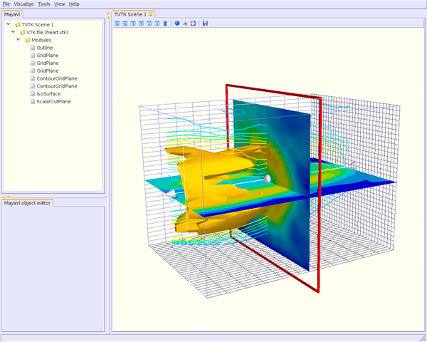
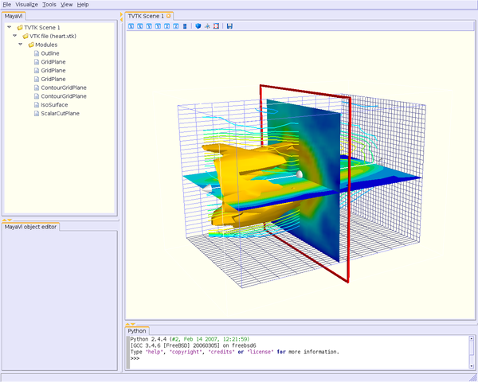
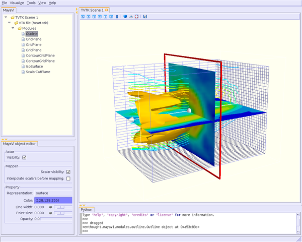
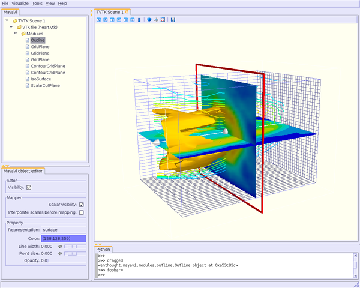
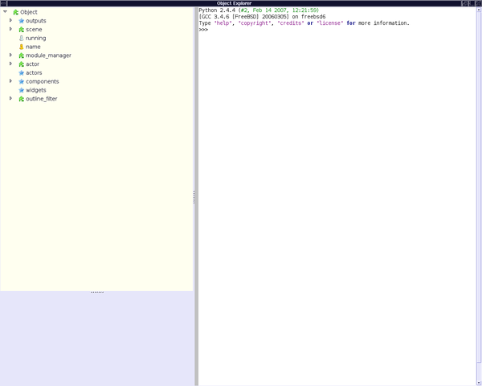
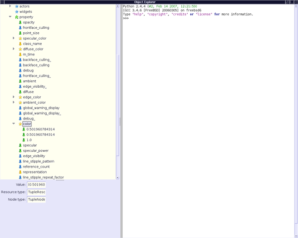
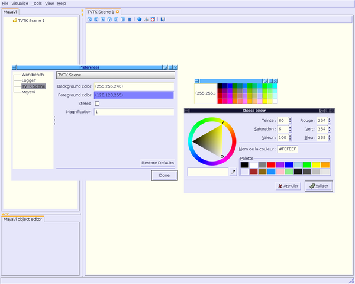

TableOfContents
Here are general tips on how best to use !MayaVi2.
Here are a few tips showing how to script mayavi2 interactively and effectively.
Running the contour.py python script example, you should get:
First, enable python shell clicking on Python in the “View” menu. A python shell should appear at the bottom of the !MayaVi2 window:
Then drag any object from the tree view on the left and drop it on the python shell and you’ll get the object. Say you want to get the Outline module:
Now, you can use your object following two ways: typing directly in the python shell or using the explore() method.
You can create an instance of your object in the python shell window.
Note that you benefit of “word completion” in this python shell, ie a little window popups letting you choose the name of the expected object or method.
Thus, you can display the RGB values of the outline color for instance:
However, find out objects or methods can be not so easy: you may not know how they depends from each other. An easier way is using the explore() method.
Simply type
explore(_)
or
explore(foobar)
if you have previously defined it:
Then, you get the following window:
Considering the last example, about the color of the outline module, you can unfold the “tree” and thus, get the info you need:
Very powerful, isn’t it ! :-)
You can also work in the pyhon shell, create your objects and so on...
On the embedded Python shell in the !MayaVi2 application, the name ‘mayavi’ is bound to the !MayaVi scripting interface which can be used to script mayavi easily as shown here:
e = mayavi.engine # Get the MayaVi engine.
mayavi.new_scene() # Create a new scene
# [...]
mayavi.save_visualization('foo.mv2')
mayavi.load_visualization('foo.mv2')
Note that the Mayavi engine lets you script mayavi in powerful ways. For example:
e = mayavi.engine
Here ‘e’ is the running Engine instance (mayavi/engine.py) and has the same hierarchy that you see on the mayavi tree view. For example:
e.scenes[0] # --> first scene in mayavi.
e.scenes[0].children[0] # --> first scene's first source (vtkfile)
Another example, just run examples/contour.py and type/cut/paste the following to get the scalar cut plane module:
e = mayavi.engine
s = e.scenes[0].children[0].children[0].children[-1]
# Think scene.datafile.module_manager.last_module
It is possible to use Mayavi2 from within IPython and script it. You must first start IPython with the ‘-wthread’ command line option. Here is an example:
from enthought.mayavi.app import Mayavi
m = Mayavi()
m.main()
m.script.new_scene() # m.script is the mayavi.script.Script instance
engine = m.script.engine
In the above, ‘m.script’ is the same as the ‘mayavi’ instance on the embedded shell.
If you are writing a stand-alone script to visualize something like the scripts in the examples/ directory, please use any of the examples as a template.
Saving snapshots within a python script is very easy:
s = script.engine.current_scene
s.scene.save('test.jpg', size=(width,height))
You can also save images in a lot of others format: !PostScript (ps), Encapsuled !PostScript (eps), PDF (pdf), Bitmap (bmp), TIFF (tiff), PNG (png), !OpenInventor (iv), Virtual Reality Markup Language (wrl, vrml), Geomview (oogl), !RenderMan RIB (rib), Wavefront (obj).
The obvious corollary of saving snapshots is saving a lot of snapshots in order to make a movie for example, without !MayaVi2 window popup for each snapshot recorded.
The answer is straightforward (only under UN*X boxes): use the ‘X virtual framebuffer’.
The following lines give you the trick. You can improve it, of course, scripting it in shell, python, and so on.
* create your X virtual framebuffer with the following command: 'xvfb :1 -screen 0 1280x1024x24'. It will use the display #1, with a size of 1280x1024 and 24 bit depth color;
* export your display: 'export DISPLAY=:1' (sh/bash syntax) or 'setenv DISPLAY :1' (csh/tcsh syntax)
* run your !MayaVi2 script as usual;
* once finished, and all your snapshots have been created, don't forget to kill the X virtual framebuffer and reset your display to its previous value. If not, you won't be able to see your movie ;-)
Drag the module manager to the python shell and you will be able to enable alpha transparency in the colormap via:
dragged.scalar_lut_manager.lut.alpha_range=(0,1)
Run !MayaVi2, go to “Tools” menu then “Preferences” then “TVTK Scene”.
Suppose that you want to change background color: click on “Background color” tag.
Here, you can choose a predefined color, or click in the square to set your RGB value, for instance.
Also, if you want to set foreground color, it will be applied for all modules and filters, i.e. outline color, text color, labels axes, and so on.
Your preferences will be saved in a !MayaVi2 configuration file, so you’ll get these colors each time you run a !MayaVi2 session.